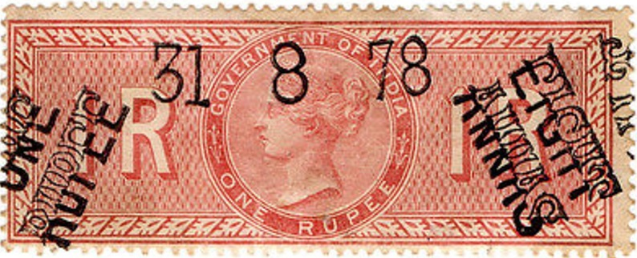
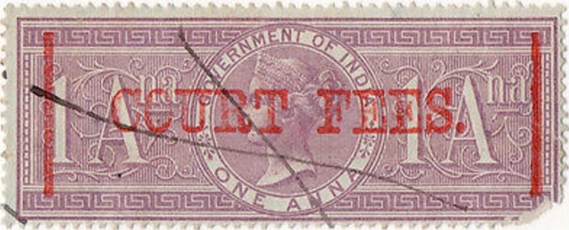
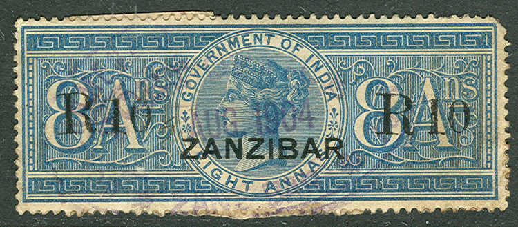

Return To Catalogue - India - India fiscal stamps, overview
Note: on my website many of the
pictures can not be seen! They are of course present in the
catalogue;
contact me if you want to purchase it.
In 1866 the first 13 values were issued (all in lilac). Some
unissued values exist with "SPECIMEN" overprint. In
1868 a second set of 23 stamps was issued, but all values now
have different colors. From 1875 stamps surcharged with fancy
letters were also issued (Hundi cancels?), however this should be
considered more like a security overprint than a surcharge used
from 1875 to 1883. In 1903, 6 values were overprinted.
I have seen the following values: 1 a red, 1 a green, 2 a violet,
3 a brown, 4 a green, 6 a brown, 8 a blue, 12 a red, 1 R red, 2 R
lilac, 4 R brown, 5 R violet, 6 R green, 7 R orange, 10 R red, 20
R olive, 200 R brown, 500 R green and 1000 R red. These stamps
often have embossing on them or the typical circular date chop as
shown above. I've seen them with a "CANCELLED"
overprint. Also with a "HUNDI" overprint.

From 1875 stamps surcharged with fancy letters were also issued
(Hundi cancels?), however this should be considered more like a
security overprint than a surcharge used from 1875 to 1883. Here
1 R 8 a on 1 R indicating the total amount of fiscal stamps on
one document (to avoid people from stealing stamps from the
document). The Forbin guide (erroneously) lists 31 of these
stamps.
Here the proper usage of these 'overprints' on a document; a 1 R
stamp and a 8 a stamp on one document.
The following 6 surcharged stamps were issued in 1903: "2
TWO 2" on 3 a brown, "TWO ANNAS" on 40 R blue,
"12-A. 12-A." on 8 R grey, "TWELVE ANNAS"
(3x) on 20 R yellow, "1 ONE 1" on 50 R grey and "3
THREE 3" on 40 R blue.
The values 1 a, 2 a and 4 a exist with overprint "TELEGRAPH":
"S.C.COURT CALCUTTA" overprint (Small Cause Court), issued in 1869:

The overprint exists with "CALCUTTA" left or right.
There exist three different kind of these overprints (different
sizes).
1869: With horizontal overprint "SMALL CAUSE COURT,
CALCUTTA": the values 2 a violet, 4 a green, 8 a blue, 1 R
red, 2 R lilac, 4 R brown, 5 R violet, 6 R green, 7 R orange, 9 R
green, 10 R red, 20 R brown, 30 R orange and 50 R grey were
overprinted.
"High Court." (Calcutta issue); The following values in
lilac color are listed in the Forbin guide: 1 a, 2 a, 3 a, 6 a, 1
R, 2 R, 3 R, 4 R, 7 R and 10 R. Futhermore exist 1 a lilac on
blue, 2 a violet, 3 a brown, 4 a green, 8 a blue, 12 a red, 3 R
brown, 6 R green, 7 R orange, 9 R grey and 20 R olive. I've also
seen 4 a lilac (see image above) and 8 a lilac.
"High Court Service." The values 6 a lilac, 8 a blue
and 1 R brown exist according to the Forbin Guide (the Forbin
Guide says the authenthicity is not proven).

1892 "SHARE TRANSFER" overprint; the values 2 a lilac,
3 a brown and 6 a brown were issued.
"SECUNDERABAD." overprint for the state of
Secunderabad. Issued in 1890: the following values were
overprinted: 1 a, 2 a, 3 a, 4 a, 6 a, 8 a, 12 a, 1 R, 2 R, 3 R, 4
R and 5 R.

These stamps exist overprinted with "ZANZIBAR" to be
used in Zanzibar (beware of forged
overprints, check the cancels!)
In this design ('SPECIAL ADHESIVE') exist: 2 a, 3
a, 4 a, 6 a, 8 a and 12 a (all in green and brown).
In a slightly larger design: 1 R, 2 R, 3 R, 4 R, 5 R, 6 R, 7 R, 8
R, 9 R and 10 R (all in lilac and green, the designs being all
slightly different).
In an even larger size were issued: 20 R, 30 R, 40 R, 50 R, 100 R
and 200 R (all in green and brown).
Special Adhesives with King George V.
{kind=link}
{kind=link}